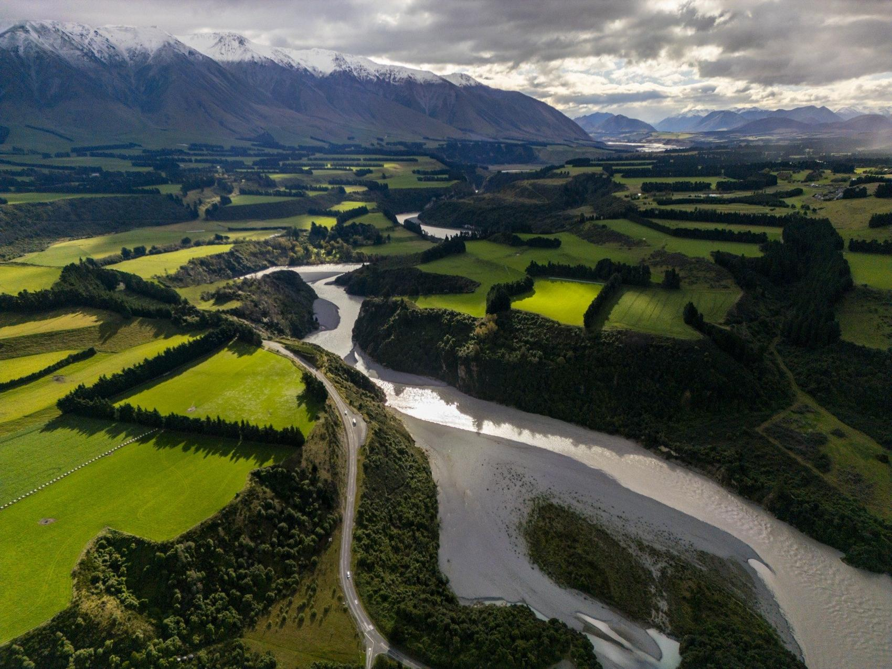
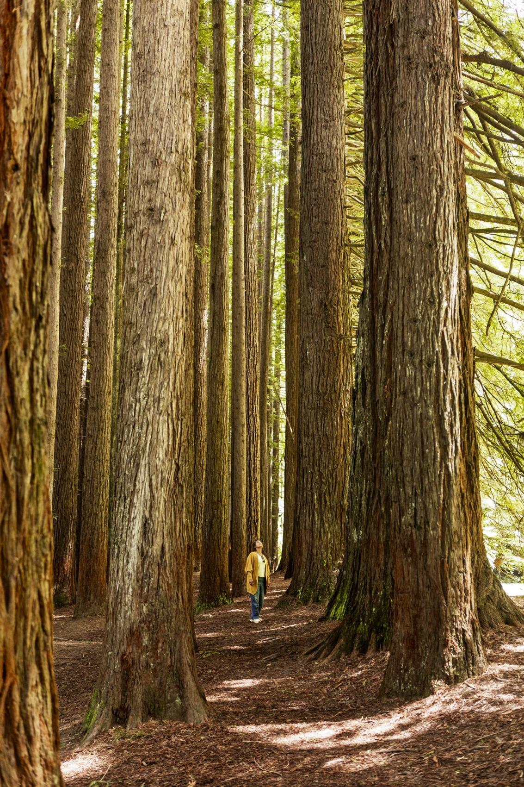
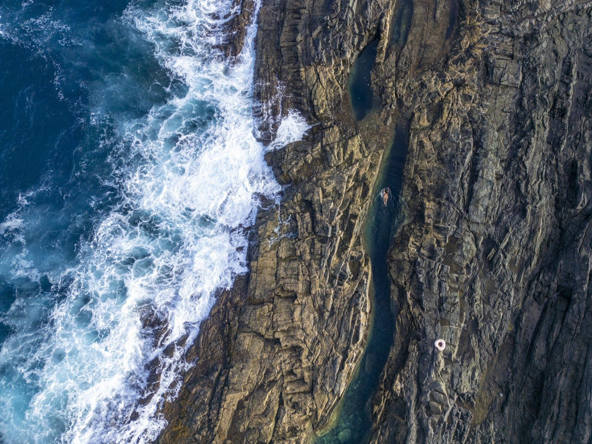
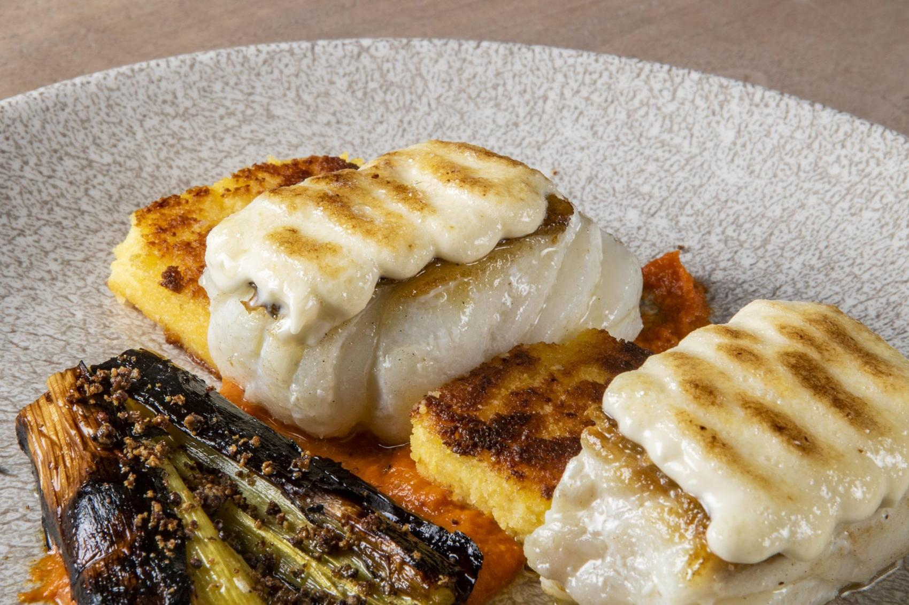

TOUR GALICIA × JUAN AIZPURU
Galicia se vive.
Vamos a mostrarla.
Fotografía y vídeo para enseñar vuestras excursiones, conectar con nuevos viajeros y presentar Galicia a vuestros colaboradores.
VER LA PROPUESTA ↘FOTOGRAFÍA DE PORTFOLIO ANTERIOR · IMAGEN ILUSTRATIVA
UNA PROPUESTA PARA TOUR GALICIA
Mostrad el viaje
antes de empezarlo.
Vuestras rutas unen paisaje, patrimonio y guías que conocen el territorio. Podemos convertir esa experiencia en material que ayude a venderla.
Propongo viajar a Galicia y trabajar con vuestro equipo para fotografiar y filmar excursiones reales: desde Costa da Morte y Finisterre hasta la Ribeira Sacra, Santiago y las salidas para cruceristas.
Podéis utilizar las imágenes en vuestra web y presentaciones comerciales, o contar con mi equipo para desarrollar una campaña completa según las rutas y mercados que queráis impulsar.
EXPLORAR LA COLABORACIÓN ↗
PAISAJE · RUTAS · PERSONAS
El territorio
y quienes lo enseñan.
UNA PRODUCCIÓN PARA VUESTROS VIAJES
Contenido para cada
forma de descubrir Galicia.
Elegimos juntos las excursiones y públicos prioritarios. Las imágenes se producirán en Galicia con vuestro equipo y colaboradores locales.
01Vuestras excursiones más importantes+
Mostrar el recorrido y sus momentos: salidas desde Santiago o A Coruña, los paisajes de Costa da Morte, los miradores de Ribeira Sacra y la experiencia de viajar con vuestros guías.
02Experiencias para viajeros de crucero+
Enseñar de forma clara lo que se puede conocer durante una escala: la llegada al puerto, el acompañamiento de vuestro equipo y las visitas que ofrecéis a A Coruña o Santiago.
03Gastronomía y gente del lugar+
Retratar guías, productores y experiencias gastronómicas que forman parte de vuestras rutas, acordando su participación y permisos con el equipo local.
04Una colección visual o una campaña+
Crear material para fichas de excursiones, web, presentaciones a agencias y distribuidores. También podemos desarrollar una campaña completa. El alcance y los derechos de uso se acuerdan antes de producir.
TRABAJO SELECCIONADO
Una mirada personal.
Un trabajo en equipo.
Estas imágenes son fotografías anteriores de Juan Aizpuru, realizadas fuera de Galicia. Ilustran el estilo; el material propuesto se crearía allí junto a Tour Galicia.


CÓMO TRABAJAMOS
Vuestras rutas.
Un plan compartido.
Empezamos por las experiencias que queréis promocionar, los clientes a los que queréis llegar y los usos previstos. Con eso preparamos una producción realista con vuestro equipo local.
La duración y las localizaciones dependen del proyecto. Podemos centrarnos en una ruta o trabajar varias experiencias durante más tiempo.
Acordamos entregables y derechos de uso antes de empezar. Juan conserva la propiedad del material original.
SOBRE JUAN AIZPURU
Fotografía, vídeo
y trabajo sobre el terreno.
Soy Juan Aizpuru, fotógrafo y realizador afincado en Bilbao. Trabajo con equipos locales y puedo incorporar profesionales de producción cuando el proyecto lo necesita.
Me interesa crear imágenes que enseñen tanto el lugar como la experiencia de quienes lo recorren.
VER MI TRABAJO ↗Desde Bilbao.
Creado junto al equipo local.
FITUR 2027 · MADRID
Hablemos de
vuestras próximas rutas.
Me gustaría conocer qué experiencias queréis impulsar y estudiar cómo crear las imágenes que necesitáis.
VER MI PORTFOLIO ↗Tour Galicia · Stand 9A31, pabellón 9